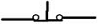
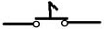
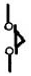
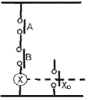
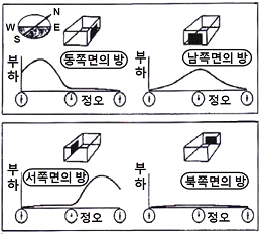

공조냉동기계기능사 (2006-10-01 기출문제)
1과목: 공조냉동안전관리
1. 다음 NH3냉동기 운전에 관한 설명 중 가장 위험한 것은?
- 액 햄머 현상이 일어나고 있다.
- 압축기 냉각수온이 높아지고 있다.
- 냉동장치에 수분이 들어 있다.
- 증발기에 적상이 과도하게 끼어 있다.
(정답률: 57%)

2. 보호구를 사용하지 않아도 무방한 작업은?
- 유해방사선을 쬐는 작업
- 유해물을 취급하는 작업
- 공작기계를 판매하는 작업
- 유해가스를 발산하는 장소에서 행하는 작업
(정답률: 95%)
3. 줄을 사용할 때의 주의점 중 틀린 것은?
- 반드시 자루를 끼워서 사용할 것
- 해머 대용으로 사용하지 말 것
- 땜질한 줄은 부러지기 쉬우므로 사용하지 말 것
- 줄의 눈이 막힌 것은 손으로 털어 사용할 것
(정답률: 88%)
4. 작업 시에 입는 작업복으로서 부적당한 것은?
- 주머니는 가급적 수가 적은 것이 좋다.
- 정전기가 발생하기 쉬운 섬유질 옷의 착용을 금한다.
- 옷에 끈이 있는 것은 기계작업을 할 때는 입지 않는다.
- 화학약품 작업 시는 화학약품에 내성이 약한 것을 착용한다.
(정답률: 90%)
5. 다음 중 소화기는 어느 곳에 두어야 가장 적당한가?
- 밀폐된 곳에 둔다.
- 방화물질이 있는 곳에 둔다.
- 눈에 잘 띄는 곳에 둔다.
- 적당한 구석에 둔다.
(정답률: 86%)
6. 사업주의 안전에 대한 책임에 해당되지 않는 것은?
- 안전기구의 조직
- 안전활동 참여 및 감독
- 사고기록조사 및 분석
- 안전방침 수립 및 시달
(정답률: 48%)
7. 가스용접 시 사용하는 아세틸렌호스의 색은?
- 흑색
- 적색
- 녹색
- 백색
(정답률: 78%)
8. 사용 중인 보일러의 점화전 일반 준비사항으로 옳지 않은 것은?
- 수면계 수위를 확인할 것
- 압력계 기능을 확인할 것
- 연료가 석탄일 경우에는 오일펌프와 프리히터를 작동시킬 것
- 댐퍼, 안전밸브, 급수장치를 조절할 것
(정답률: 59%)
9. 다음 드릴 작업 중 유의할 사항으로 틀린 것은?
- 작은 공작물이라도 바이스나 크랩을 사용한다.
- 드릴이나 소켓을 척에서 해체시킬 때에는 해머를 사용한다.
- 가공 중 드릴 절삭 부분에 이상음이 들리면 작업을 중지하고 드릴을 바꾼다.
- 드릴의 착탈은 회전이 멈춘 후에 한다.
(정답률: 87%)
10. 감전사고를 예방하기 위한 조치로서 적당하지 못한 것은?
- 전기 기기에 위험표시
- 전기 설비의 점검철저
- 가급적 보호접지는 생략
- 노출된 충전부분에는 절연용 보호구를 설치
(정답률: 89%)
11. 기계의 운전 중에도 할 수 있는 것은?
- 치수측정
- 주유
- 분해조립
- 기계주변의 변경
(정답률: 47%)
12. 가스장치실의 구조에 해당되지 않는 것은?
- 벽은 불연성으로 할 것
- 지붕, 천정의 재료는 가벼운 불연성일 것
- 가스가 누출시 당해 가스가 정체되지 아니하도록 할 것
- 방음장치를 설치할 것
(정답률: 82%)
13. 보일러 내부의 수위가 내려가 과열되었을 때 응급조치 사항 중 타당하지 않는 것은?
- 보일러의 운전을 정지시킬 것
- 급수밸브를 열어 급히 다량의 물을 공급할 것
- 댐퍼 및 재를 받는 곳의 문을 닫을 것
- 연료의 공급밸브를 중지하고 댐퍼와 1차 공기의 입구를 차단할 것
(정답률: 57%)
14. 다음 중 암모니아 냉매가스의 누설검사로 적합하지 않은 것은?
- 붉은 리트머스 시험지가 청색으로 변한다.
- 브라인에 누설될 때는 네슬러 시약을 이용해서 검사한다.
- 헤라이트 토치를 사용해서 검사한다.
- 염화수소와 반응시켜 흰 연기를 발생시켜 검사한다.
(정답률: 72%)
15. 작업장 내에 안전표지를 부착하는 이유는?
- 능률적인 작업을 유도하기 위해
- 인간심리의 활성화 촉진
- 인간행동의 변화 통제
- 작업장 내의 환경정비 목적
(정답률: 50%)
2과목: 냉동기계
16. 관 절단 후 절단부에 생기는 비트(거스러미)를 제거하는 공구는?
- 클립
- 사이징투울
- 파이프 리이머
- 쇠톱
(정답률: 86%)
17. 복귀형 수동 스위치 a접점기호는?



(정답률: 39%)
18. 액체가 기체로 변할 때의 열은?
- 승화열
- 응축열
- 증발열
- 융해열
(정답률: 76%)
19. 냉매가스 압축시 단열압축이 행하여지는데 토출가스의 온도가 상승하는 이유는?
- 압축일량이 열로 바뀌어서 냉매에 전해지기 때문
- 주위의 열을 흡수하여 냉매가스의 온도를 높이기 때문
- 내부에너지를 사용하여 냉매가스의 온도를 높이기 때문
- 압축시 팽창된 냉매가스의 체적이 열로 바뀌기 때문
(정답률: 33%)
20. 30℃의 물 2,000kg을 -15℃의 얼음으로 만들고자 한다. 이 경우 물로부터 빼앗아야 할 열량은 얼마인가?(단, 외부로부터 침입되는 열량은 없는 것으로 한다.)
- 149,400kcal
- 234,360kcal
- 281,232kcal
- 293,400kcal
(정답률: 52%)
21. 압축기에서 보통 안전밸브의 분출압력은 고압차단스위치(HPS) 작동압력에 비하여 어떻게 조정하면 좋은가?
- 고압차단스위치 작동 압력보다 다소 낮게 한다.
- 고압차단스위치 작동 압력보다 다소 높게 한다.
- 고압차단스위치 작동 압력과 같게 한다.
- 고압차단스위치 작동 압력보다 낮거나 높아도 관계없다.
(정답률: 64%)
22. 2단 압축 냉동장치에 있어서 다음 사항 중 옳은 것은?
- 고단측 압축기와 저단측 압축기의 피스톤 압출량을 비교하면 저단측이 크다.
- 냉매 순환량은 저단측 압축기 쪽이 크다.
- 2단 압축은 압축비와 관계없이 단단 압축에 비해 유리하다.
- 2단 압축은 R-22 및 R-12에는 사용되지 않는다.
(정답률: 28%)
23. 냉매의 설명으로 적당하지 못한 것은?
- 프레온 냉동장치에서 유분리기를 압축기에서 멀리 응축기 가까운 곳에 설치하면 가스온도가 낮아져 유의 점도가 커짐으로 분리가 용이하다.
- 프레온 냉동장치에서는 수분에 의한 영향을 막기 위해 건조기를 설치한다.
- NH3 냉동장치에서의 패킹재료로서 천연고무가 사용된다.
- 압축효율 증대를 위해 NH3냉동장치에서는 워터자켓을 설치한다.
(정답률: 43%)
24. 제빙용으로 적당한 증발기는?
- 플레이트식 증발기
- 헤링본식 증발기
- 셀튜브식 건식증발기
- 팬코일식 증발기
(정답률: 58%)
25. 얼음두께 280㎜, 브라인온도 -9℃일 때 결빙에 소요되는 시간은?
- 약 25시간
- 약 49시간
- 약 60시간
- 약 75시간
(정답률: 51%)
26. 다음 중 용어 설명이 맞는 것은?
- 건포화증기 : 습포화증기를 계속 가열하여 액이 존재하지 않는 포화상태의 가스
- 과열도 : 과열증기온도 - 포화액 온도
- 포화온도 : 어떤 압력하에서 상승하는 온도
- 건조도 : 과열증기 구역에서 액과 가스의 존재비율
(정답률: 54%)
27. 접합점의 온도를 달리하여 전기가 흐르는 현상은?
- 전자효과
- 제백효과
- 펠티어효과
- 줄톰슨효과
(정답률: 28%)
28. 다음 그림과 같은 논리회로는?

- OR회로
- NOR회로
- NOT회로
- AND회로
(정답률: 50%)
29. 피스톤의 지름이 150㎜, 행정이 90㎜, 회전수가 1,500rpm이고 6기통인 암모니아 왕복동 압축기의 피스톤 토출량은 약 얼마인가?
- 211.9m3/h
- 311.9m3/h
- 658.4m3/h
- 858.4m3/h
(정답률: 24%)
30. 다음 중 나사용 패킹이 아닌 것은?
- 네오플렌
- 일산화연
- 액상 합성수지
- 페인트
(정답률: 23%)
31. 압축기의 톱 클리어런스(top clearance)가 크면 어떠한 영향이 나타나는가?
- 체적효율이 증대한다.
- 냉동능력이 감소한다.
- 압축가스온도가 저하한다.
- 윤활유가 열화하지 않는다.
(정답률: 55%)
32. 다음 유체의 문자기호의 의미가 다른 것은?
- 공기 - A
- 가스 - G
- 유류 - O
- 물 - S
(정답률: 83%)
33. 다음은 공비 혼합냉매의 조합에 대한 설명이다. 틀린 것은?
- R - 500 = R152 ＋ R12
- R - 501 = R12 ＋ R22
- R - 502 = R115 ＋ R22
- R - 503 = R13 ＋ R22
(정답률: 31%)
34. 흡수식냉동기의 특징이 아닌 것은?
- 압축기 구동용의 대형 전동기가 없다.
- 부분 부하시의 운전 특성이 우수하다.
- 용량제어성이 좋다.
- 부하가 규정용량을 초과하게 되면 상당히 위험하다.
(정답률: 40%)
35. 다음 중 무기질 단열재에 해당되지 않는 것은?
- 펠트
- 유리면
- 암면
- 규조토
(정답률: 38%)
36. 모리엘 선도 상에서 알 수 없는 것은?
- 압축비
- 냉동효과
- 성적계수
- 압축효율
(정답률: 36%)
37. 저압차단스위치(LPS)의 작동에 의하여 장치가 정지되었을 때 점검사항에 속하는 사항이다. 틀린 것은?
- 응축기의 냉각수 단수 여부확인 조치
- 압축기의 용량제어 장치의 고장여부
- 저압측의 적상 유무 확인
- 팽창밸브의 개도 점검
(정답률: 33%)
38. NH3냉동장치에서 토출가스의 과냉각은 몇 ℃가 적당한가?
- 5℃
- 11℃
- 14℃
- 21℃
(정답률: 67%)
39. R-12를 사용하는 밀폐식 냉동기의 전동기가 타서 냉매가 수백도의 고온에 노출 되었을 경우 발생하는 유독기체는?
- 일산화탄소
- 사염화탄소
- 포스겐
- 염소
(정답률: 40%)
40. 다음 중 흡수식 냉동장치의 적용대상이 아닌 것은?
- 백화점 공조용
- 산업공조용
- 제빙공장용
- 냉난방 장치용
(정답률: 62%)
41. 브라인의 구비조건으로 적당하지 못한 것은?
- 응고점이 낮아야 한다.
- 열전도가 커야한다.
- 화학반응을 일으키지 않아야 한다.
- 점성이 커야 한다.
(정답률: 69%)
42. 흡수식냉동장치에서는 안전 확보와 기기의 보호를 위하여 여러 가지 안전장치가 설치되어 있다. 그 목적에 해당되지 않는 것은?
- 냉수 동결방지
- 결정방지
- 모터보호
- 압축기보호
(정답률: 53%)
43. 배관에서 지름이 다른 관을 연결하는데 사용하는 것은?
- 캡
- 유니언
- 레듀샤
- 플러그
(정답률: 65%)
44. 증발온도가 다른 2개의 증발기에서 발생하는 냉매가스를 압축하는 다효 압축시 저압 흡입구는 어디에 연결되어 있는가?
- 피스톤 상부
- 피스톤 행정 최하단 실린더 벽
- 피슨톤 하부
- 피스톤 행정 중간 실린더 벽
(정답률: 57%)
45. 원심식 냉동기의 서어징 현상에 대한 설명 중 옳지 않은 것은?
- 응축압력이 한계점 이상으로 계속 상승한다.
- 전류계의 지침이 심히 움직인다.
- 고압이 저하하며, 저압이 상승한다.
- 소음과 진동을 수반하고 베어링 등 운동부분에서 급격한 마모현상이 발생한다.
(정답률: 37%)
3과목: 공기조화
46. 외기온도 -5℃일 때 공급공기를 18℃로 유지하는 히트펌프로 난방을 한다. 방의 총열손실이 50,000kcal/h일 때의 외기로부터 얻은 열량은 몇 kcal/h인가?
- 43,500
- 46,048
- 50,000
- 53,255
(정답률: 51%)
47. 온풍난방을 하고 있는 사무실 내의 거주 환경에서 적합한 건구온도는 몇 ℃인가?
- 22
- 28
- 30
- 33
(정답률: 50%)
48. 공기조화 설비를 하는 이유가 아닌 것은?
- 사용자에게 쾌감 제공
- 작업능률의 증진
- 화재를 미연에 방지
- 건강유지의 도모
(정답률: 69%)
49. 중앙의 공기조화기로부터 온풍과 냉풍을 혼합하여 각실에 공급하는 방식은?
- 재열 방식
- 단일덕트 방식
- 이중덕트 방식
- 팬코일 유닛 방식
(정답률: 59%)
50. 보일러에서 공기예열기 사용시 이점을 열거한 것 중 틀린 것은?
- 열효율 증가
- 연소효율 증대
- 저질탄 연소 가능
- 노내 온도 저하
(정답률: 67%)
51. 온도, 습도, 기류의 영향을 하나로 모아서 만든 온열 쾌감지표는?
- 실내건구온도
- 실내습구온도
- 상대습도
- 유효온도
(정답률: 69%)
52. 공조설비에 사용되는 보일러에 대한 설명으로 틀린 것은?
- 증기보일러의 보급수는 가능한 연수장치로 처리할 필요가 있다.
- 보일러 효율은 연료가 보유하는 고위발열량을 기준으로 하고, 보일러에서 발생한 열량과의 비를 나타낸 것이다.
- 관류보일러는 소요 압력의 증기를 짧은 시간에 발생시킬 수 있다.
- 보일러의 증기압력이 이상으로 높아지면 보일러가 파괴될 위험성이 있으므로 안전장치로서 본체에 안전밸브를 설치할 필요가 있다.
(정답률: 37%)
53. 루버댐퍼에 관한 설명 중 옳은 것은?
- 취출구에 설치하여 풍량조절
- 덕트 도중에서의 풍량조절
- 분기점에서의 풍량조절
- 다른 구역으로 연기의 침투를 방지
(정답률: 50%)
54. 패키지 유닛 방식의 특징이 아닌 것은?
- 중앙기계실의 면적을 적게 차지한다.
- 취급이 간단해서 단독운전을 할 수 있고 대규모 건물의 부분공조가 용이하다.
- 송풍기 정압이 높으므로 제진효율이 높아진다.
- 시공이 용이하고 공기가 단축된다.
(정답률: 44%)
55. 다음 그림에서 설명하고 있는 냉방부하의 변화요인은?

- 방의 크기
- 방의 방위
- 단열재의 두께
- 단열재의 종류
(정답률: 72%)
56. 다음 공조방식 중 전공기 방식이 아닌 것은?
- 휀 코일 유닛 방식
- 이중덕트 방식
- 단일 덕트 방식
- 각층 유닛 방식
(정답률: 51%)
57. 증기방열기의 표준 방열량의 값은 몇 kcal/m2ㆍh인가?
- 450
- 650
- 750
- 850
(정답률: 46%)
58. 다음 용어 중에서 습공기 선도와 관계가 없는 것은?
- 비체적
- 열용량
- 노점온도
- 엔탈피
(정답률: 47%)
59. 난방시의 상대습도와 실내기류의 값으로 적당한 것은?
- 60 ~ 70%, 0.13 ~ 0.18m/s
- 40 ~ 50%, 0.13 ~ 0.18m/s
- 20 ~ 30%, 0.10 ~ 0.25m/s
- 60 ~ 70%, 0.10 ~ 0.25m/s
(정답률: 50%)
60. 보일러에서 절탄기(Economizer) 사용하였을 때 얻을 수 있는 이점이 아닌 것은?
- 보일러의 열효율이 향상된다.
- 보일러의 증발능력이 증가된다.
- 보일러 판의 열응력을 감소시킨다.
- 저온부식 방지 및 통풍력이 증대된다.
(정답률: 34%)